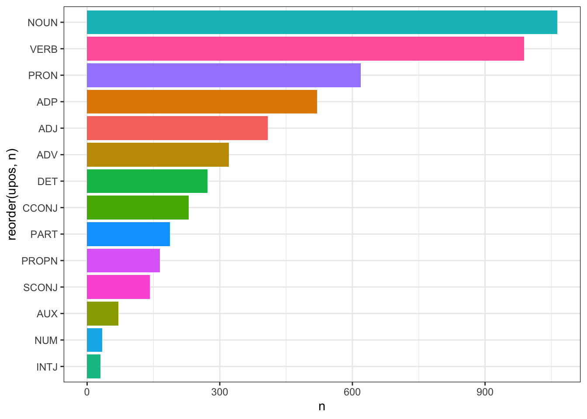

Тема 13 Латентно-семантический анализ
13.1 Что это такое
В этом уроке речь пойдет о таком методе, как латентно-семантический анализ, или LSA (в области информационного поиска называемый также LSI, Latent Semantic Indexing).
Как и LDA, это метод метод обработки информации на естественном языке, который позволяет находить взаимосвязь между коллекцией документов и встречающимися в них терминами за счет сопоставления этих документов и терминов с некоторыми темами.
То есть LSA – это тоже метод тематического моделирования. Скрытым такое моделирование называется потому, что семантические взаимосвязи между документами и терминами, как правило, заранее не известны. В исходной термдокументной матрице, которую мы скармливаем алгоритму, не видно никаких закономерностей. Как раз задача аналитика – их обнаружить, как это показывает анимация ниже.

13.2 Векторное представление слов
Как вообще машина может обнаружить “близкие” слова и документы? При помощи векторизации: каждый документ или слово можно представить в виде вектора частотностей, где каждое значение будет некой координатой в многомерном пространстве. Мы исходим из того, что в похожих документах употребляются одни и те же слова, а похожие слова встречаются в похожих документах. В 1957 британский лингвист Джон Руперт Фёрс сформулировал это так: you shall know a word by the company it keeps.
Можно сказать, что это основополагающий принцип векторной семантики. Мы не пытаемся заглянуть в голову носителю языка (в случае с древнегреческим это было бы затруднительно), а смотрим на цифры.
Как только документ или термин представлены в виде вектора, в дело вступает простая (или не очень простая) геометрия: под расстоянием между документами или терминами имеется в виду именно геометрическое расстояние (или сходство). Как правило, в алгоритме LSA используется косинусное сходство (о том, что это такое, я рассказывала в видео: часть 1 и часть 2).
В англоязычной литературе векторные представления называют эмбеддингами. По-английски embedding означает «вложение». Представляя объект в виде вектора, мы как бы «вкладываем» его в векторное пространство, где действуют геометрические законы.
13.3 Проклятие размерности
Идея хорошая, но она сразу же наталкивается на трудность: даже для небольших коллекций документов термдокументная матрица является очень разреженной (даже в небольшом примере из предыдущего урока разреженность составляла почти 100%). Чем больше ваш корпус, тем более разреженной будет матрица: это естественно, поскольку в каждом документе встречается лишь небольшая часть всех слов.
Любые действия над такими матрицами требуют больших вычислительных затрат, а результат не обязательно будет точным из-за проблемы синонимии: слово apple можно встретить как в плодово-овощной рубрике, так и в заметке об IT. Латентно-семантическое индексирование частично решает обе проблемы.
13.4 Сингулярное разложение матрицы
В основе LSA лежит метод малоранговой аппроксимации термдокументной матрицы, позволяющий “спроецировать” исходную матрицу C в пространство меньшей размерности при помощи алгоритма SVD (Singular Value Decomposition, или сингулярное разложение матрицы). Подробнее об этом алгоритме см. видео.
Рангом системы строк (столбцов) матрицы A с m строками и n столбцами называется максимальное число линейно независимых строк (столбцов). Несколько строк (столбцов) называются линейно независимыми, если ни одна из них не выражается линейно через другие. Ранг системы строк всегда равен рангу системы столбцов, и это число называется рангом матрицы.
Если r – ранг исходной матрицы, а k – ранг новой матрицы, при этом k значительно ниже r, то матрица C_k называется малоранговой аппроксимацией. Для ее получения применяется трехэтапная процедура:
для заданной матрицы строится ее сингулярное разложение по формуле: \(C = UΣV^t\);
по матрице Σ строится \(Σ_k\): r - k наименьших сингулярных значений на диагонали матрицы заменяются нулями;
вычисляется новая матрица \(C_k = UΣ_kV^t\).
Теперь подробнее.
- Матричное разложение, или факторизация – представление матрицы в виде произведения нескольких матриц. Сингулярное разложение (SVD) матрицы A равно \(A=U⋅Σ⋅V^t\), где
- U — матрица левых сингулярных векторов матрицы A,
- Σ — диагональная матрица сингулярных чисел матрицы A,
- V — матрица правых сингулярных векторов матрицы A.

- Сингулярные значения в диагональной матрице всегда упорядочены по убыванию, и можно без больших потерь отсечь малоинформативные ряды или столбцы. Как правило, так и делают, и такое SVD называется усеченным.

Сингулярные векторы (они выделены цветом) в матрицах U и V соответствуют темам в тексте, которых в общей сложности k штук. Чему равно k — человек задает вручную при вычислении разложения, а значит, всегда есть возможность найти ровно k тем. Математически это представлено так, что алгоритм разложения выбирает из исходной матрицы k самых больших сингулярных чисел и формирует из них среднюю матрицу Σ, элементы которой идут по диагонали. (Отсюда).
Строки матрицы U соответствуют словам; а в V^t столбцы соответствуют отдельным документам. Следовательно, первая строка матрицы U показывает, в каких документах встречается слово, а первый столбец V^T показывает, какие темы встречаются в документе.
- Умножение U на Σ дает векторное представление слов; умножение Σ на V – векторное представление документов. Часто пространство слов объединяют с пространством документов, что позволяет находить ближайшие документы по поисковому запросу.
Все это будет понятнее на простом примере.
13.5 Простой пример
Рассморим это на простом примере (отсюда).
Допустим, у нас есть пять документов.
d1 : Romeo and Juliet.
d2 : Juliet: O happy dagger!
d3 : Romeo died by dagger”.
d4 : “Live free or die”, that’s the New-Hampshire’s motto.
d5 : Did you know, New Hampshire is in New-England.
Поисковый запрос: dies, dagger. Очевидно, ближе всего к запросу d3, т.к. он содержит оба слова. Но какой документ должен быть следующим? И d2, d4 содержат по одному слову из запроса, а явно релевантный d1 – ни одного.
Составим термдокументную матрицу.
df = data.frame(d1 = c(c(1, 1), rep(0, 6)),
d2 = c(c(0, 1, 1, 1), rep(0, 4)),
d3 = c(1, 0, 0, 1, 0, 1, 0, 0),
d4 = c(rep(0, 4), rep(1, 4)),
d5 = c(rep(0, 7), c(1)))
rownames(df) <- c("romeo", "juliet", "happy", "dagger", "live",
"die", "free", "new-hampshire")
df## d1 d2 d3 d4 d5
## romeo 1 0 1 0 0
## juliet 1 1 0 0 0
## happy 0 1 0 0 0
## dagger 0 1 1 0 0
## live 0 0 0 1 0
## die 0 0 1 1 0
## free 0 0 0 1 0
## new-hampshire 0 0 0 1 1И применим SVD.
## [,1] [,2] [,3] [,4] [,5]
## [1,] 2.285 0.00 0.000 0.000 0.000
## [2,] 0.000 2.01 0.000 0.000 0.000
## [3,] 0.000 0.00 1.361 0.000 0.000
## [4,] 0.000 0.00 0.000 1.118 0.000
## [5,] 0.000 0.00 0.000 0.000 0.797Сингулярные значения меньше двух усекаем, остается два сингулярных значения.
## [,1] [,2]
## [1,] 2.285 0.00
## [2,] 0.000 2.01Матрица левых сингулярных векторов выглядит так:
## [,1] [,2] [,3] [,4] [,5]
## [1,] -0.396 0.280 -0.571 0.450 -0.102
## [2,] -0.314 0.450 0.411 0.513 0.204
## [3,] -0.178 0.269 0.497 -0.257 0.043
## [4,] -0.438 0.369 0.013 -0.577 -0.220
## [5,] -0.264 -0.346 0.146 0.047 0.417
## [6,] -0.524 -0.246 -0.339 -0.273 0.155
## [7,] -0.264 -0.346 0.146 0.047 0.417
## [8,] -0.326 -0.460 0.317 0.237 -0.725От нее отсекаются все столбцы, кроме первых двух; каждый ряд в этой матрице отвечает за определенный термин:
## [,1] [,2]
## [1,] -0.396 0.280
## [2,] -0.314 0.450
## [3,] -0.178 0.269
## [4,] -0.438 0.369
## [5,] -0.264 -0.346
## [6,] -0.524 -0.246
## [7,] -0.264 -0.346
## [8,] -0.326 -0.460Матрица правых сингулярных векторов тоже усекается:
## [,1] [,2] [,3] [,4] [,5]
## [1,] -0.311 -0.407 -0.594 -0.603 -0.143
## [2,] 0.363 0.541 0.200 -0.695 -0.229Каждый столбец в этой матрице соответствует одному документу.
Умножим U на S_truncated (усеченную сигму), и S_truncated – на V_t, мы объединяем документы и термины в единое векторное пространство.
# эмбеддинги документов
doc_emb <- round((S_truncated %*% Vt_truncated), 3)
colnames(doc_emb) <- c("d1", "d2", "d3", "d4", "d5")
doc_emb ## d1 d2 d3 d4 d5
## [1,] -0.711 -0.930 -1.357 -1.378 -0.327
## [2,] 0.730 1.087 0.402 -1.397 -0.460# эмбеддинги слов
word_emb <- round((U_truncated %*% S_truncated), 3)
rownames(word_emb) <- c("romeo", "juliet", "happy", "dagger", "live", "die", "free", "new-hampshire")
word_emb## [,1] [,2]
## romeo -0.905 0.563
## juliet -0.717 0.904
## happy -0.407 0.541
## dagger -1.001 0.742
## live -0.603 -0.695
## die -1.197 -0.494
## free -0.603 -0.695
## new-hampshire -0.745 -0.925Координаты поискового запроса (который рассматриваем как новый документ) считаем как центроид двух векторов его слов:
## [1] -1.099 0.124Объединяем все в единый датафрейм.
## # A tibble: 14 × 3
## names V1 V2
## <chr> <dbl> <dbl>
## 1 romeo -0.905 0.563
## 2 juliet -0.717 0.904
## 3 happy -0.407 0.541
## 4 dagger -1.00 0.742
## 5 live -0.603 -0.695
## 6 die -1.20 -0.494
## 7 free -0.603 -0.695
## 8 new-hampshire -0.745 -0.925
## 9 d1 -0.711 0.73
## 10 d2 -0.93 1.09
## 11 d3 -1.36 0.402
## 12 d4 -1.38 -1.40
## 13 d5 -0.327 -0.46
## 14 q_doc -1.10 0.124Добавим еще одну переменную.
type <- c(rep("word", 8), rep("doc", 6))
all_df <- all_df %>% bind_cols(type)
colnames(all_df) <- c("x", "dim1", "dim2", "type")
all_df## # A tibble: 14 × 4
## x dim1 dim2 type
## <chr> <dbl> <dbl> <chr>
## 1 romeo -0.905 0.563 word
## 2 juliet -0.717 0.904 word
## 3 happy -0.407 0.541 word
## 4 dagger -1.00 0.742 word
## 5 live -0.603 -0.695 word
## 6 die -1.20 -0.494 word
## 7 free -0.603 -0.695 word
## 8 new-hampshire -0.745 -0.925 word
## 9 d1 -0.711 0.73 doc
## 10 d2 -0.93 1.09 doc
## 11 d3 -1.36 0.402 doc
## 12 d4 -1.38 -1.40 doc
## 13 d5 -0.327 -0.46 doc
## 14 q_doc -1.10 0.124 docТеперь строим график.
library(tidyverse)
library(ggrepel)
all_df %>%
ggplot(aes(dim1, dim2,
color = as.factor(type), label = x)) +
geom_point(show.legend = F) +
geom_text_repel(aes(fontface = "bold"), show.legend = F) +
theme_bw() +
xlab(NULL) +
ylab(NULL) +
geom_abline(slope = 0, intercept = 0, linetype = "dotted") +
geom_vline(xintercept = -1.10, linetype = "dotted") +
coord_cartesian(xlim = c(-1.7, 0.2), ylim = c(-1.5, 1.5)) +
geom_abline(slope = lm1$coefficients[2],
intercept = lm1$coefficients[1], linetype = "dotted") +
geom_abline(slope = lm2$coefficients[2],
intercept = lm2$coefficients[1], linetype = "dotted")
Как видно, поисковый запрос оказался ближе к d2, чем к d4, хотя в каждом из документов было одно слово из запроса. Более того: он оказался ближе к d1, в котором не было ни одного слова из запроса! Наш алгоритм оказался достаточно умен, чтобы понять, что d1 более релевантен, хотя и не содержит точных совпадений с поисковыми словами. Возможно, человек дал бы такую же рекомендацию.
Мы исследовали наш небольшой корпус графически, теперь посчитаем косинусное расстояние.
dist_mx <- all_df %>%
filter(type == "doc") %>%
select(-x, -type) %>%
philentropy::distance(method = "cosine") ## Metric: 'cosine'; comparing: 6 vectors.rownames(dist_mx) <- c("d1", "d2", "d3", "d4", "d5", "q")
colnames(dist_mx) <- c("d1", "d2", "d3", "d4", "d5", "q")
dist_mx## d1 d2 d3 d4 d5 q
## d1 1.00000000 0.99792078 0.8724625 -0.02002992 -0.1796188 0.7736415
## d2 0.99792078 1.00000000 0.8391517 -0.08442786 -0.2426496 0.7311943
## d3 0.87246248 0.83915171 1.0000000 0.47110771 0.3240227 0.9846131
## d4 -0.02002992 -0.08442786 0.4711077 1.00000000 0.9871367 0.6180004
## d5 -0.17961877 -0.24264957 0.3240227 0.98713669 1.0000000 0.4843579
## q 0.77364153 0.73119433 0.9846131 0.61800043 0.4843579 1.000000013.6 Пример посложнее
LSA, в отличие от LDA, – это не вероятностная, а алгебраическая модель. Это значит, что термдокументная матрица может хранить не только данные об абсолютной встречаемости слова в документе (как это требует LDA), выраженные целыми числами, но и любые реальные числа. Как правило, используется tf_idf, о которой шла речь в одном из предыдущих уроков.